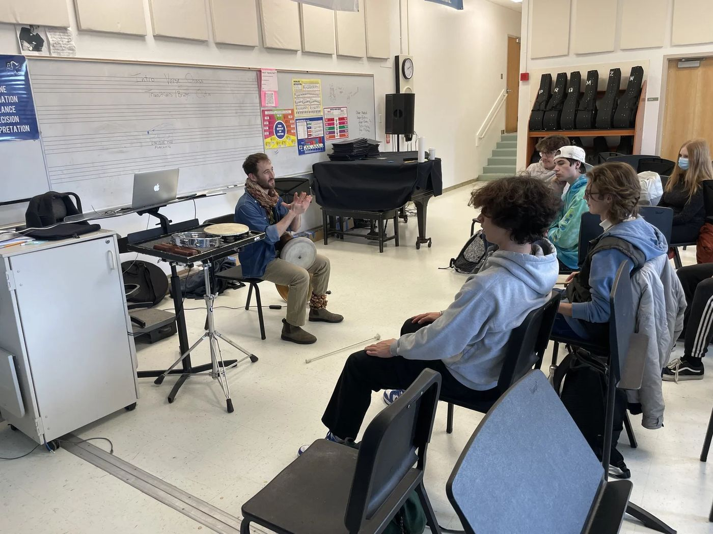
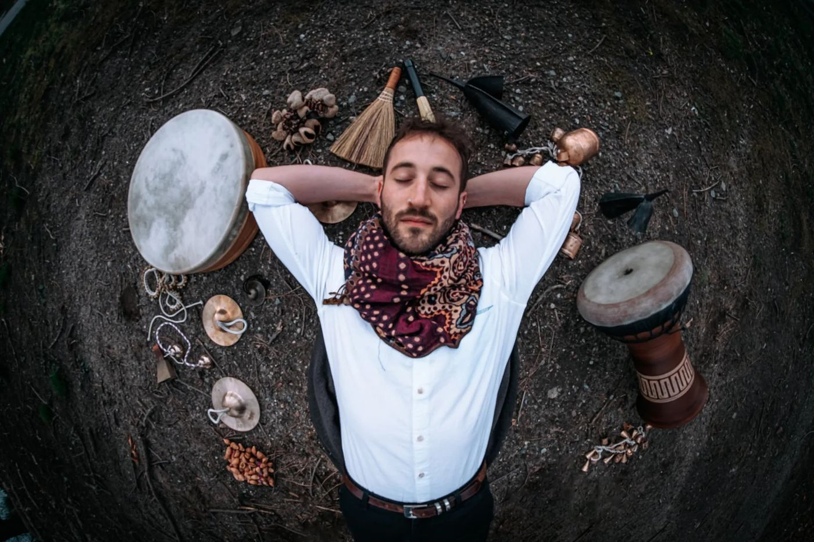

Teaching
Ten years of teaching, from first lessons to university auditions, built into one method that joins Middle Eastern rhythm with drum set technique.

Lessons, masterclasses, workshops
Private lessons
Drum set and Middle Eastern percussion, online or in person. No experience needed, just the will to walk the path. Lessons also prepare students for conservatory recitals and university auditions.
book a timeMasterclasses
Rhythmic creativity, Middle Eastern rhythms and frame drum technique for orchestras, colleges, high-school music programs and ensembles. Given at the New England Conservatory, the Panama Jazz Festival, Bar-Ilan University and more.
invite nadavGroup workshops
A full percussion curriculum for different ages and levels, drawing on traditions from Israel, Morocco, Egypt, Turkey, West Africa, India and Brazil. Groups open once a year, and custom groups can be arranged.
ask about groups
The Middle Eastern Drum Set
Nadav’s book brings the rhythms of the darbuka and frame drum to the drum kit. Students learn the core Middle Eastern rhythms by their sound and feel, then voice them across the kit and improvise inside them.

Schools & programs
- Kiryat Ono Conservatory · teacher and business manager2023–now
- HaSadna Conservatory, Jerusalem2023–now
- New England Conservatory, Middle Eastern percussion course2022–2023
- Building Bridges Through Music, Massachusetts2021–2023
- Peimot Music School, Jerusalem2019–2021